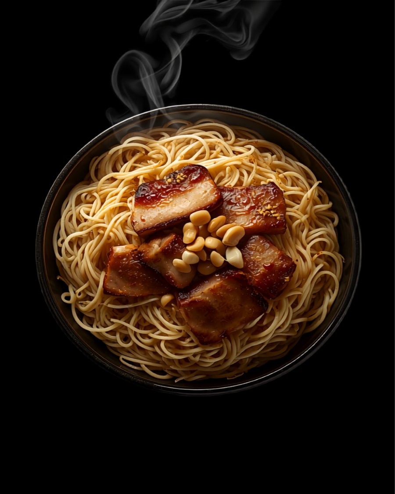

MEN / 麺
平打ち太麺
EST. 2021 — 関内二郎出身の店主が焼く 本格二郎系
うまい。以上。
平打ちの太麺、微乳化の甘めスープ、食べ応えのある豚。ごちゃごちゃ説明はいらない。並んで、コールして、ワシワシ食う。それだけの店です。

難しくない。店内にルールもちゃんと書いてある。麺が出る前に、これだけ言えばいい。
増しでシャキシャキ。多いと感じたら少なめでも満足。
入れる？入れない？その日の予定と相談を。
コクが欲しいなら。パンチが一段上がる。
甘めスープだから、カラメもよく合う。
※ 初心者は「ヤサイニンニク」あたりから。予習していけば、うまいラーメンが待ってる。
THE STORE
ラーメンピースは、ラーメン二郎 横浜関内店で修行した店主が、2021年に七隈で開いた二郎系ラーメン店です。
九州でも二郎インスパイアは増えました。それでも「昔よく行った関内二郎を思い出す」——そう言ってもらえる、紛うことなき直系のクオリティ。それがこの店の誇りです。
甘めのスープは、麺とヤサイをまとめて中和してくれる食べやすさ。トッピングも日によって準備しているから、飽きずに通える一杯です。
GOOGLE REVIEWS — 実際の声を引用
紛うことなき直系のクオリティを味わえるのはこのお店。昔よく行っていた関内二郎を思い出します。ちゃんとコールの予習をしていれば、美味しいラーメンを提供してくれる素敵なお店です。
微乳化甘めスープなので、他の二郎インスパイア行くぐらいならここが食べやすい。スープが麺とヤサイを中和されていて食べやすくてうまい。二郎初心者にお勧め！
ワシワシ太麺のムチッと感と歯切れと啜り心地も良き！途中で生卵ドボンして味変。これは沼るやつや、、ごちそうさまでした！！
並んで、コールして、ワシワシ食う。それだけ。